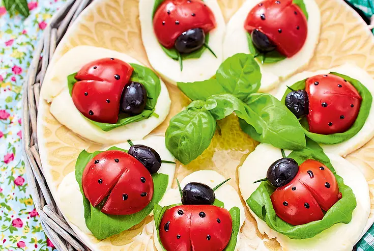

Tomatenmarienkäfer Caprese

{kind=link}
Dieses Rezept ist eine kinderfreundliche Variante des klassischen italienischen Caprese-Salats. Die Kombination aus Tomaten, Mozzarella und Basilikum stammt ursprünglich aus Italien und spiegelt mit ihren Farben Rot, Weiss und Grün die italienische Flagge wider. Um Kinder für gesundes Essen zu begeistern, entstand die kreative Idee, kleine Marienkäfer aus Tomaten zu gestalten. So wird aus einem einfachen Salat eine spielerische Vorspeise, die nicht nur lecker schmeckt, sondern auch Spass beim Zubereiten macht.
Rezeptinformationen
Zubereitungszeit: 20 Minuten
Niveau: ganz einfach
Portionen: 10 Stück
Zutaten
- 5 kleine Tomaten
- 4–6 Schnittlauchhalme
- 4 Stiel Basilikum
- 250 g Mozzarella
- 10 schwarze Oliven (ohne Stein)
- 2 EL Balsamicocreme
- Salz, Pfeffer und Olivenöl
Zubereitung
-
Vorbereitung der Zutaten:
- Tomaten waschen und trocken tupfen.
- Tomaten der Länge nach halbieren.
- Am Stielansatz eventuell gerade schneiden, damit sie gut auf der Platte liegen.
- Auf der gegenüberliegenden Seite der Tomaten einen kleinen Einschnitt bis zur Hälfte machen (Flügel).
- Schnittlauch waschen und in 2–3 cm lange Stücke schneiden.
- Basilikumblätter vorsichtig abzupfen.
- Mozzarella in 10 gleich grosse Scheiben schneiden.
-
Platte vorbereiten:
- Eine flache Platte oder einen Teller bereitstellen.
- Mozzarellascheiben nebeneinander auf der Platte auslegen.
- Auf jede Mozzarellascheibe ein Basilikumblatt legen.
-
Marienkäfer zusammensetzen:
- Tomatenhälften als Körper der Marienkäfer auf die Mozzarella legen.
- Zwei Schnittlauchstücke oben auf jede Tomate legen.
- Eine schwarze Olive als Kopf zwischen die Fühler legen.
-
Marienkäfer dekorieren:
- Mit einem Holzspiess Balsamicocreme als Punkte auf die Tomaten setzen.
- Nach Geschmack Salz, Pfeffer und etwas Olivenöl darüber geben.